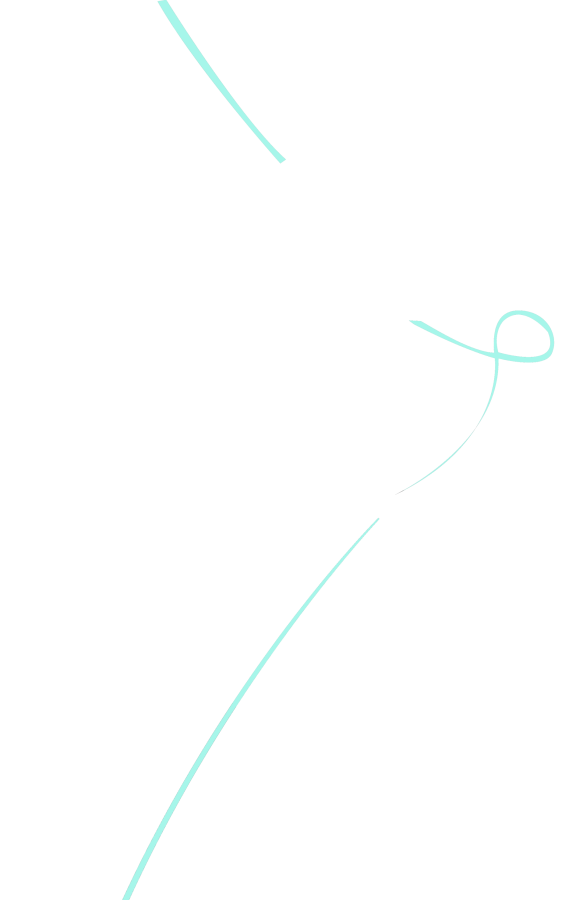
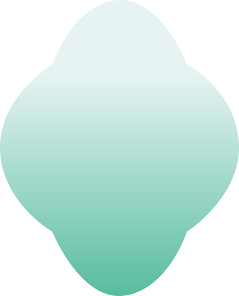
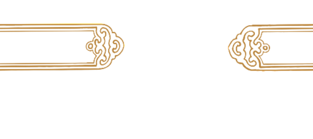
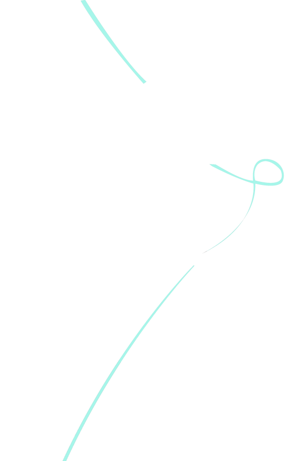
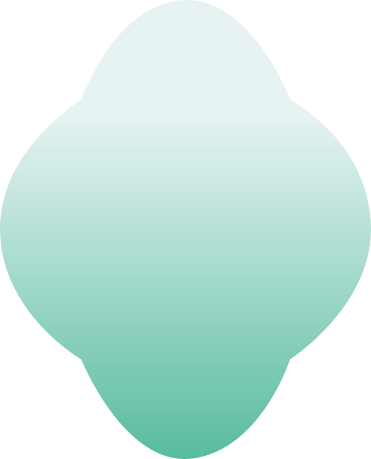
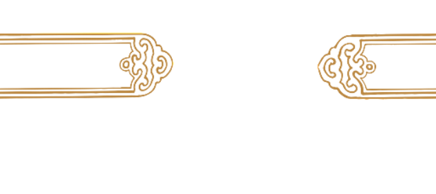

面料
蕾丝，以锦纶、涤纶等化纤或棉混纺制成，通过镂空、刺绣等工艺形成精致立体花纹，质地通透轻盈、柔软有弹性
注意事项
避尖锐物防勾丝，内搭光滑防染色；轻柔手洗 / 冷水机洗（洗衣袋），深浅分洗，忌搓揉、漂白、热水；阴干 / 低温烘干，宽衣架挂放；低温垫布熨烫；清洁后单独存放，通风防潮。
面料特点
多为锦纶、涤纶等化纤或棉混纺（含氨纶增弹性），通透轻盈、花纹精致立体，触感柔软顺滑且弹性好，贴合身形显曲线，通过镂空、刺绣等工艺营造柔美层次，轻薄款适合春夏及炎热环境，厚款（如加衬）可适配秋冬，常用于晚宴、婚礼等场合，风格浪漫优雅。
 




